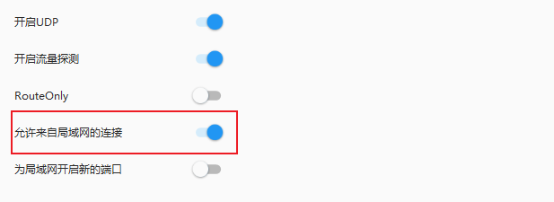
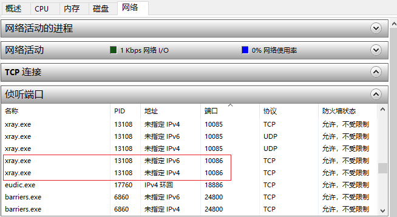
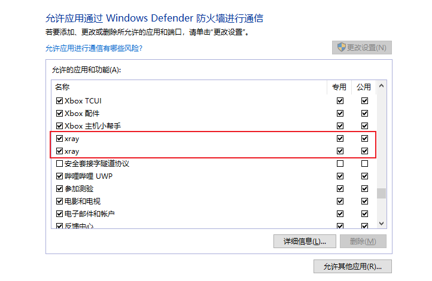

WSL2 下配置代理¶
1. 修改防火墙规则¶
开放系统对 WSL2 的局域网访问权限（无毒无害）
以管理员权限打开 powershell，输入如下命令，
cd C:\WINDOWS\system32
New-NetFirewallRule -DisplayName "WSL" -Direction Inbound -InterfaceAlias "vEthernet (WSL)" -Action Allow
允许代理软件通过防火墙
在代理软件中打开局域网连接，如下图，

在资源监视器>网络中查看监听代理端口的进程名，我的代理端口是10086，如下图，

允许该进程通过防火墙，

2. 在 WSL2 中配置代理¶
新建 proxy.sh，内容如下：
hostip=$(cat /etc/resolv.conf | grep nameserver | awk '{ print $2 }')
wslip=$(hostname -I | awk '{print $1}')
port=7890
PROXY_HTTP="http://${hostip}:${port}"
set_proxy(){
export http_proxy="${PROXY_HTTP}"
export HTTP_PROXY="${PROXY_HTTP}"
export https_proxy="${PROXY_HTTP}"
export HTTPS_proxy="${PROXY_HTTP}"
export ALL_PROXY="${PROXY_SOCKS5}"
export all_proxy=${PROXY_SOCKS5}
git config --global http.https://github.com.proxy ${PROXY_HTTP}
git config --global https.https://github.com.proxy ${PROXY_HTTP}
echo "Proxy has been opened."
}
unset_proxy(){
unset http_proxy
unset HTTP_PROXY
unset https_proxy
unset HTTPS_PROXY
unset ALL_PROXY
unset all_proxy
git config --global --unset http.https://github.com.proxy
git config --global --unset https.https://github.com.proxy
echo "Proxy has been closed."
}
test_setting(){
echo "Host IP:" ${hostip}
echo "WSL IP:" ${wslip}
echo "Try to connect to Google..."
resp=$(curl -I -s --connect-timeout 5 -m 5 -w "%{http_code}" -o /dev/null www.google.com)
if [ ${resp} = 200 ]; then
echo "Proxy setup succeeded!"
else
echo "Proxy setup failed!"
fi
}
if [ "$1" = "set" ]
then
set_proxy
elif [ "$1" = "unset" ]
then
unset_proxy
elif [ "$1" = "test" ]
then
test_setting
else
echo "Unsupported arguments."
fi
之后就可以通过如下命令设置代理：
source proxy.sh set # 打开代理
source proxy.sh unset # 关闭代理
source proxy.sh test # 测试代理
在 .zshrc 中添加如下命令：alias proxy="source proxy.sh"
之后就可以通过如下命令设置代理：
proxy set # 打开代理
proxy unset # 关闭代理
proxy test # 测试代理